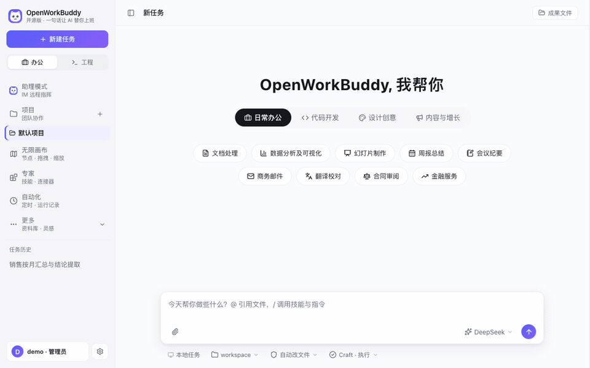
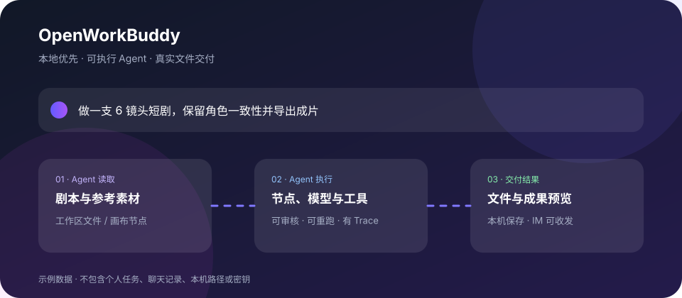

Verify the file, not the claim.
Slides, documents, spreadsheets and web pages land in your workspace so you can open, inspect and revise them.
OpenWorkBuddy is a local-first AI office workbench. Give it a request and your material; it plans, works and checks the result, then hands you a real file on your machine to inspect and revise.
Slides, documents, spreadsheets and web pages land in your workspace so you can open, inspect and revise them.
Bring cloud models, Ollama, Claude Code or Codex. Sessions, files and API keys stay under your control.
Drop in a Skill, connect MCP tools or read and change the JavaScript Agent loop. No framework maze required.
Start an image or video, import assets, edit prompts and references on cards, compare versions and export your work. Open Agent when needed; short-drama workflows also organize scripts, characters, scenes and shots.

PPT, Word, Excel, HTML, Markdown and media outputs with a results panel for inspection.
Reusable Markdown Skills, experts, expert teams, connectors and Agent Plugins.
DeepSeek, Qwen, GLM, Kimi, OpenRouter, Ollama, Claude Code and Codex.
See model, tool, duration, tokens, inputs, outputs and execution results; optionally connect Langfuse.
Use Feishu, WeChat and other IM entry points to send requests and receive files, images and audio.
Follow a real task from server.js to src/agent/agent.js, routing, tools, verification, memory and permissions.


Run a local AI office assistant that gives you files you can actually ship.
Make a project update deck ↗Study a readable Agent loop with models, tools, memory, permissions and evaluation in one repo.
Read the architecture ↗Contribute a Skill, expert workflow, MCP preset, UI improvement or reproducible issue.
Join the build ↗Download the app or run it from source on your machine.
Choose a model or use a local engine.
Give it a request and your material.
Open the delivered file and keep improving it.
Install, connect a model, run a task, review files, set up schedules and manage your local data.
Read the user guide ↗Understand the architecture, add a tool or connector, run checks and prepare a release.
Read the developer guide ↗If it helps your work, visit the repository and click ⭐ Star to bookmark it. Use Watch → Custom → Releases for release notifications. Open an issue with a reproducible problem, or send a small, complete contribution.